#1 · 1815 富喬2026-08-19 11:10
95.30
收盤 95.30 MA5 95.06 > MA10 94.39 > MA20 94.25 L1 92.50 / L2 93.80 / 頸線 94.40 停損 92.50 量度 96.30 彈回 3.03% 站上 1.12% 深度 2.05% 跌幅 6.81%
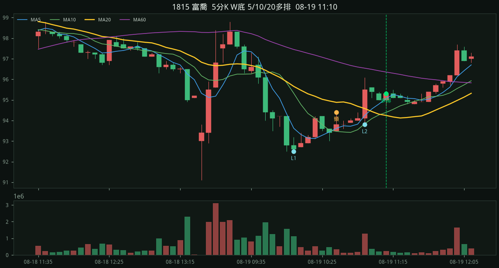
2026-08-19～2026-08-25 · 10d · 股價<700 · 嚴格 · 掃描 100 檔
規則：五分 K 做出 W 底（先大跌、兩個相近低點），等五分 MA5>MA10>MA20 多頭排列才進場。
嚴格：同一天做出 W、09:15 後、先跌 ≥5.5%、頸線深度 ≥1.2%、兩低點價差 ≤1.5%、從低點彈回 1.1%～3.5%、收盤站上 MA20 ≥0.45%，且五分 MA5>MA10>MA20 多頭排列才進場。對齊國巨 515/515→11:50 多排、南亞科 480/482→11:55 多排。
08-19 1815 富喬、2344 華邦電、2337 旺宏、6147 頎邦、5483 中美晶、2351 順德、3532 台勝科、6830 汎銓、3374 精材、8271 宇瞻、3450 聯鈞、3211 順達、1303 南亞、6538 倉和、6451 訊芯-KY、8039 台虹、2324 仁寶
08-20 6226 光鼎、2615 萬海、2486 一詮、2327 國巨、6182 合晶、1802 台玻、5608 四維航、2464 盟立、3605 宏致、3211 順達、3702 大聯大
08-21 3441 聯一光、3374 精材、4958 臻鼎-KY、3362 先進光
08-24 1301 台塑、3441 聯一光
08-25 3374 精材、6451 訊芯-KY、6147 頎邦、3450 聯鈞、1815 富喬、4991 環宇-KY、8271 宇瞻、6538 倉和、2344 華邦電、6182 合晶、2492 華新科、6173 信昌電、2327 國巨、3026 禾伸堂、2408 南亞科、3006 晶豪科、2337 旺宏、3167 大量、5608 四維航、2637 慧洋-KY、2451 創見
收盤 95.30 MA5 95.06 > MA10 94.39 > MA20 94.25 L1 92.50 / L2 93.80 / 頸線 94.40 停損 92.50 量度 96.30 彈回 3.03% 站上 1.12% 深度 2.05% 跌幅 6.81%

收盤 168.00 MA5 167.40 > MA10 167.10 > MA20 166.95 L1 166.00 / L2 166.00 / 頸線 169.00 停損 166.00 量度 172.00 彈回 1.20% 站上 0.63% 深度 1.81% 跌幅 9.04%
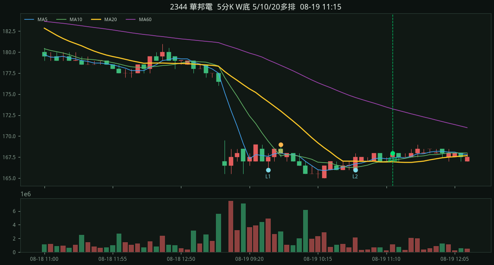
收盤 119.00 MA5 118.70 > MA10 118.35 > MA20 118.08 L1 116.50 / L2 117.50 / 頸線 118.00 停損 116.50 量度 119.50 彈回 2.15% 站上 0.78% 深度 1.29% 跌幅 5.58%
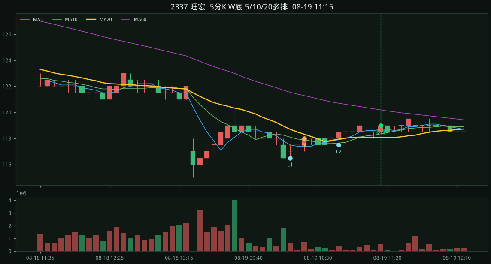
收盤 160.50 MA5 160.20 > MA10 159.75 > MA20 159.38 L1 158.00 / L2 158.00 / 頸線 162.00 停損 158.00 量度 166.00 彈回 1.58% 站上 0.71% 深度 2.53% 跌幅 6.65%
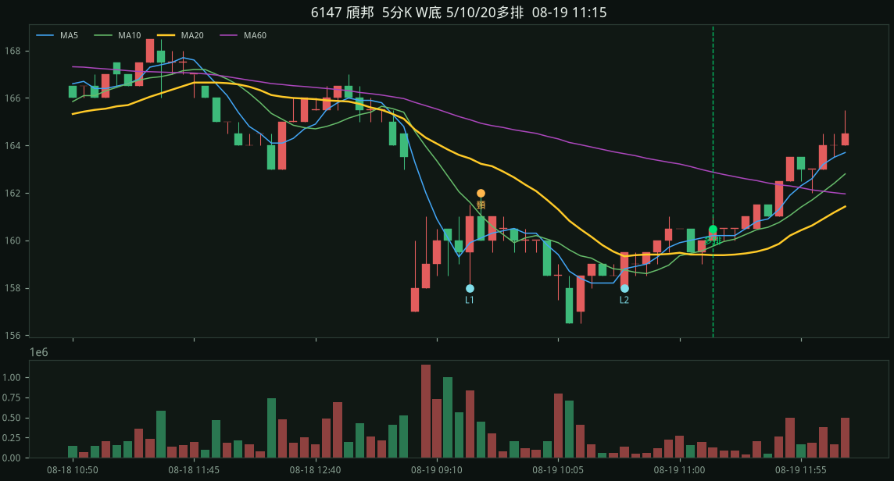
收盤 177.00 MA5 176.60 > MA10 176.05 > MA20 176.03 L1 175.00 / L2 175.00 / 頸線 179.50 停損 175.00 量度 184.00 彈回 1.14% 站上 0.55% 深度 2.57% 跌幅 9.14%
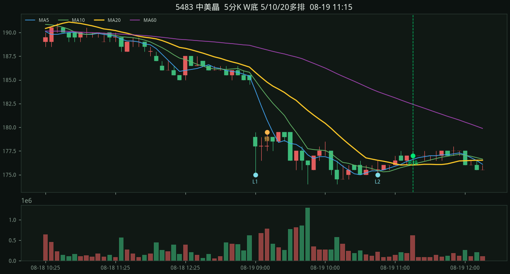
收盤 185.50 MA5 185.30 > MA10 184.85 > MA20 184.57 L1 181.00 / L2 183.50 / 頸線 188.00 停損 181.00 量度 195.00 彈回 2.49% 站上 0.50% 深度 3.87% 跌幅 5.52%
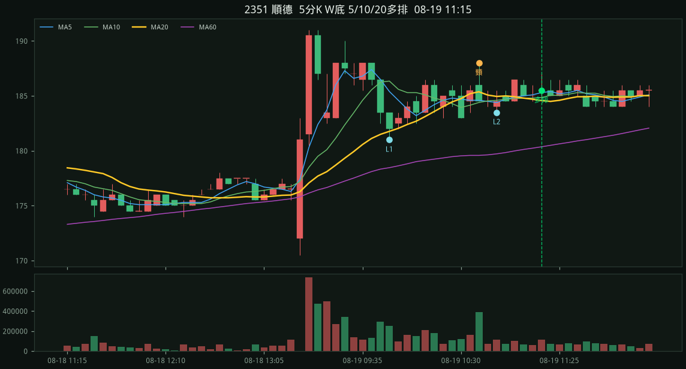
收盤 353.50 MA5 352.10 > MA10 349.40 > MA20 349.05 L1 344.50 / L2 345.50 / 頸線 349.50 停損 344.50 量度 354.50 彈回 2.61% 站上 1.27% 深度 1.45% 跌幅 12.05%
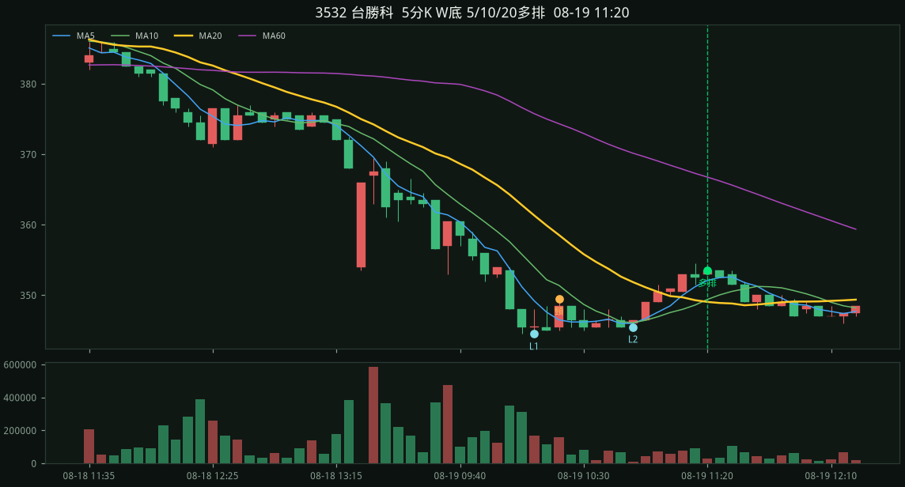
收盤 413.00 MA5 412.60 > MA10 410.75 > MA20 410.27 L1 413.00 / L2 408.50 / 頸線 424.00 停損 408.50 量度 439.50 彈回 1.10% 站上 0.66% 深度 3.79% 跌幅 8.57%
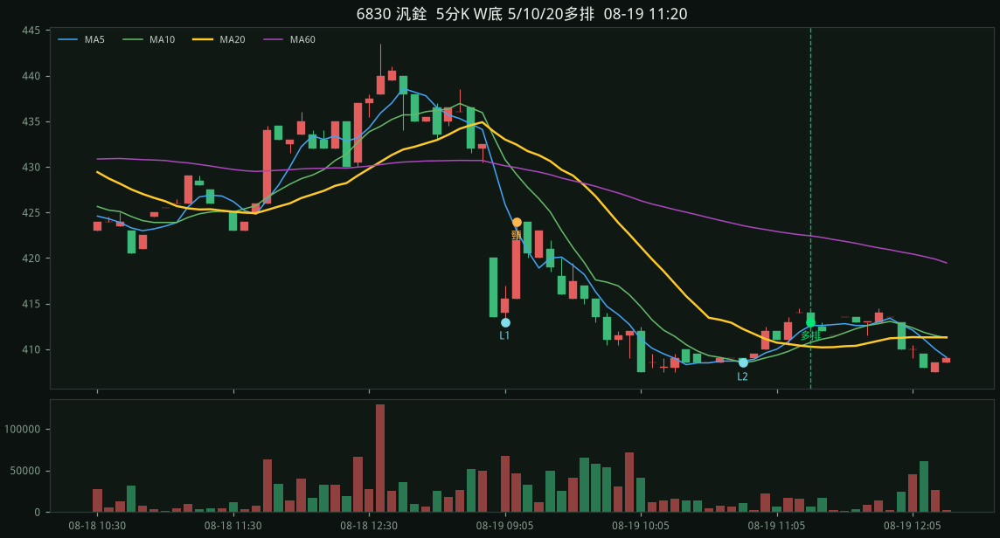
收盤 302.50 MA5 301.30 > MA10 300.95 > MA20 300.73 L1 297.00 / L2 299.00 / 頸線 302.00 停損 297.00 量度 307.00 彈回 1.85% 站上 0.59% 深度 1.68% 跌幅 6.57%
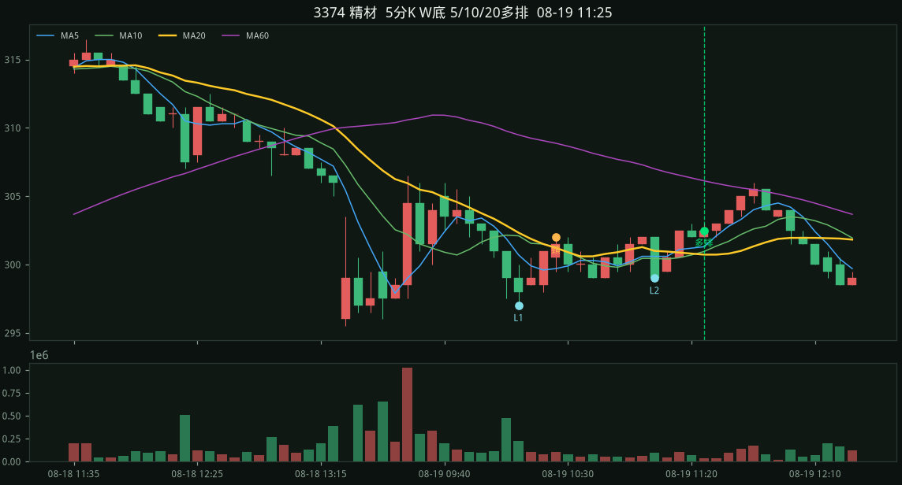
收盤 218.00 MA5 217.60 > MA10 217.30 > MA20 217.00 L1 215.50 / L2 216.00 / 頸線 221.00 停損 215.50 量度 226.50 彈回 1.16% 站上 0.46% 深度 2.55% 跌幅 5.57%
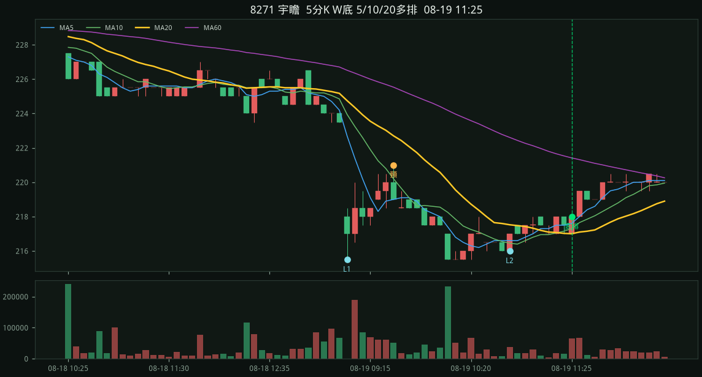
收盤 560.00 MA5 554.00 > MA10 553.60 > MA20 553.05 L1 547.00 / L2 549.00 / 頸線 557.00 停損 547.00 量度 567.00 彈回 2.38% 站上 1.26% 深度 1.83% 跌幅 8.78%
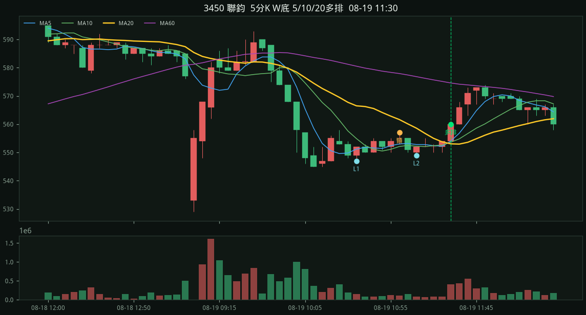
收盤 371.50 MA5 369.40 > MA10 368.90 > MA20 368.48 L1 366.00 / L2 367.50 / 頸線 376.50 停損 366.00 量度 387.00 彈回 1.50% 站上 0.82% 深度 2.87% 跌幅 6.01%
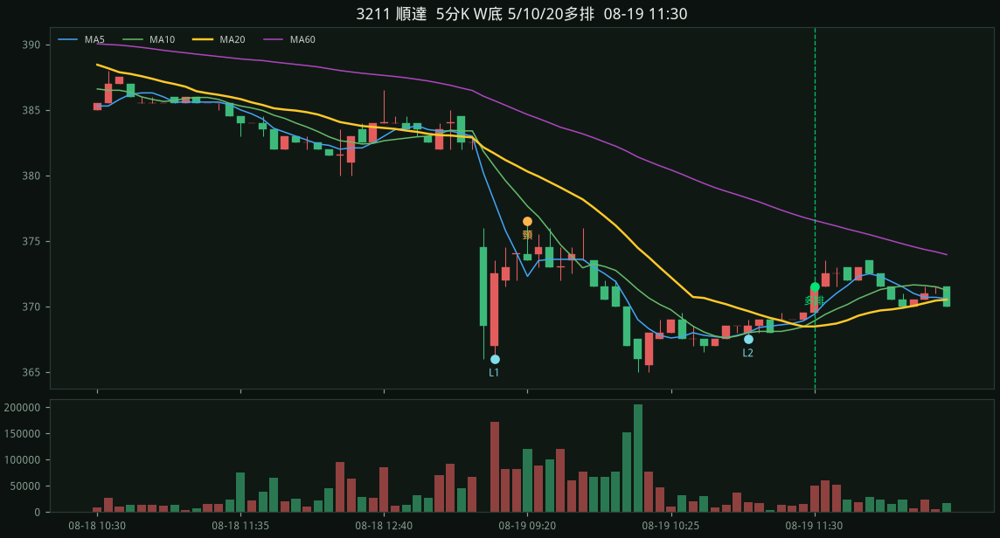
收盤 192.00 MA5 190.90 > MA10 190.60 > MA20 190.12 L1 189.50 / L2 189.50 / 頸線 197.00 停損 189.50 量度 204.50 彈回 1.32% 站上 0.99% 深度 3.96% 跌幅 7.12%
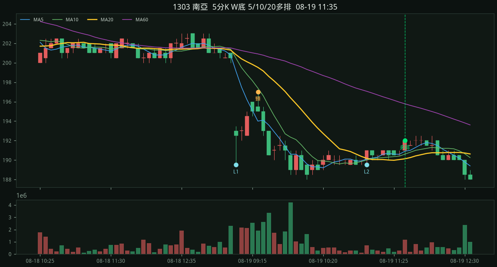
收盤 189.00 MA5 187.30 > MA10 186.65 > MA20 186.57 L1 185.00 / L2 185.00 / 頸線 188.00 停損 185.00 量度 191.00 彈回 2.16% 站上 1.30% 深度 1.62% 跌幅 7.30%
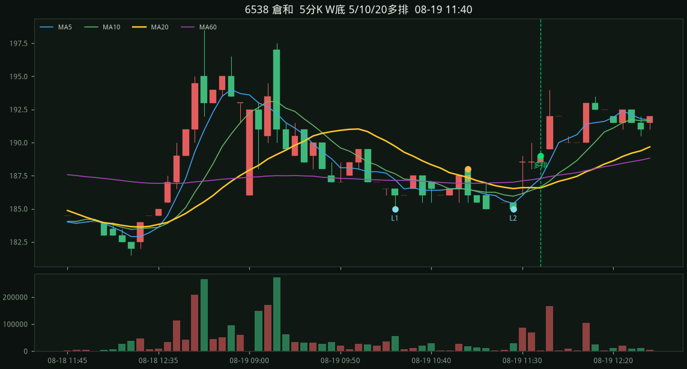
收盤 424.50 MA5 422.50 > MA10 422.40 > MA20 420.80 L1 419.00 / L2 419.00 / 頸線 428.00 停損 419.00 量度 437.00 彈回 1.31% 站上 0.88% 深度 2.15% 跌幅 9.19%
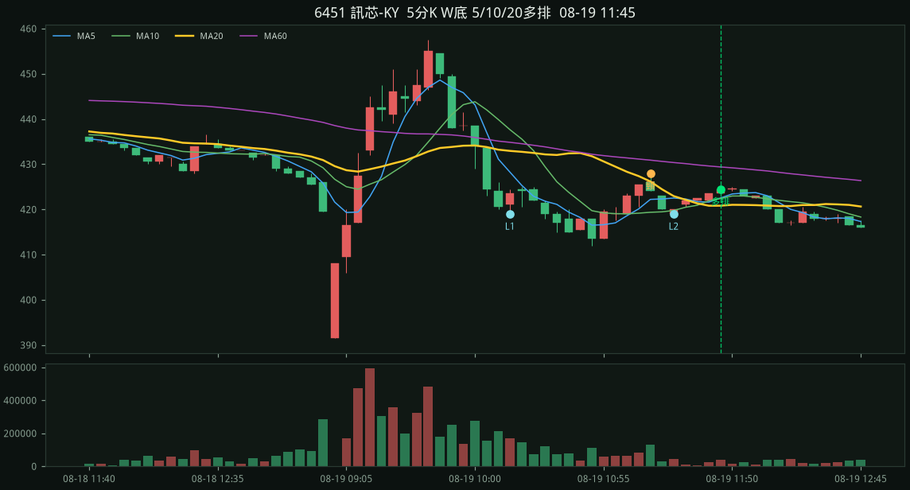
收盤 274.00 MA5 273.00 > MA10 272.95 > MA20 271.90 L1 270.00 / L2 269.00 / 頸線 276.00 停損 269.00 量度 283.00 彈回 1.86% 站上 0.77% 深度 2.60% 跌幅 5.76%
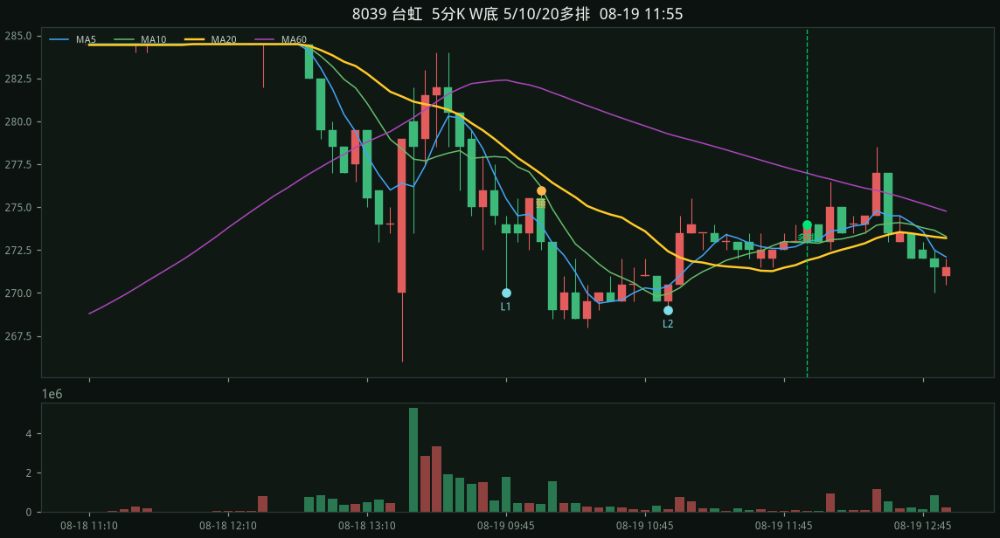
收盤 38.95 MA5 38.67 > MA10 38.64 > MA20 38.58 L1 38.40 / L2 38.45 / 頸線 39.05 停損 38.40 量度 39.70 彈回 1.43% 站上 0.96% 深度 1.69% 跌幅 6.12%
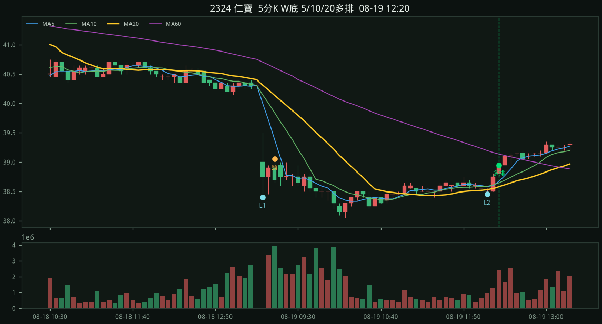
收盤 357.00 MA5 349.90 > MA10 349.70 > MA20 349.35 L1 346.00 / L2 346.50 / 頸線 353.00 停損 346.00 量度 360.00 彈回 3.18% 站上 2.19% 深度 2.02% 跌幅 5.92%
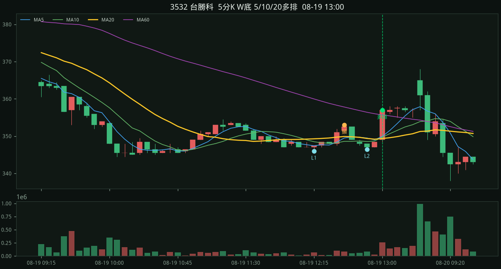
收盤 22.00 MA5 21.89 > MA10 21.83 > MA20 21.81 L1 21.60 / L2 21.65 / 頸線 22.00 停損 21.60 量度 22.40 彈回 1.85% 站上 0.87% 深度 1.85% 跌幅 7.41%
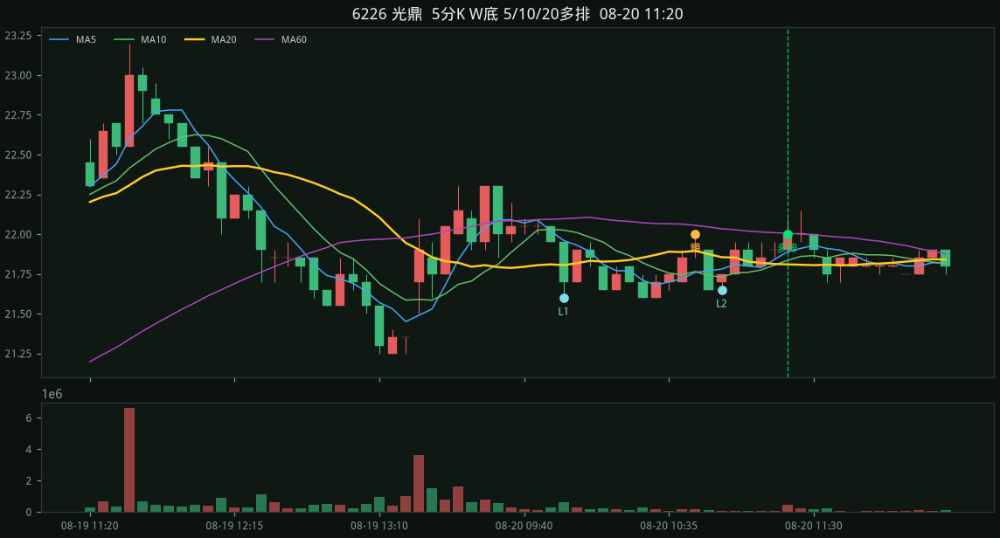
收盤 108.00 MA5 107.90 > MA10 107.50 > MA20 107.28 L1 106.00 / L2 106.50 / 頸線 107.50 停損 106.00 量度 109.00 彈回 1.89% 站上 0.68% 深度 1.42% 跌幅 5.66%
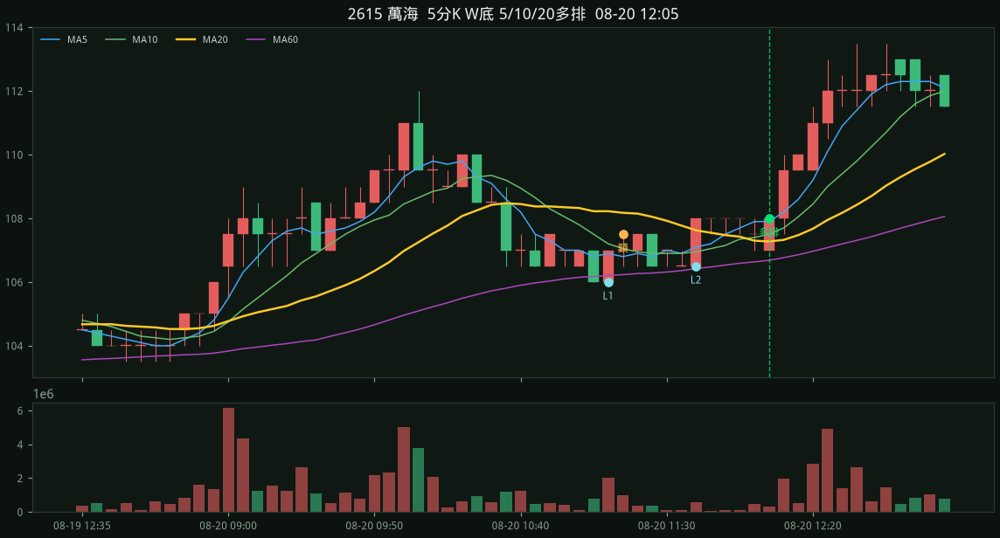
收盤 233.00 MA5 231.00 > MA10 230.95 > MA20 230.05 L1 229.00 / L2 228.00 / 頸線 235.50 停損 228.00 量度 243.00 彈回 2.19% 站上 1.28% 深度 3.29% 跌幅 6.80%
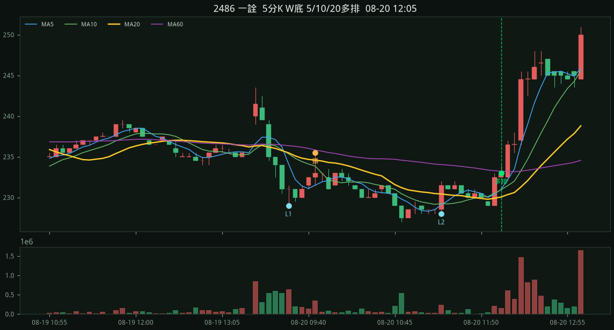
收盤 560.00 MA5 557.00 > MA10 554.70 > MA20 554.40 L1 550.00 / L2 550.00 / 頸線 557.00 停損 550.00 量度 564.00 彈回 1.82% 站上 1.01% 深度 1.27% 跌幅 6.00%
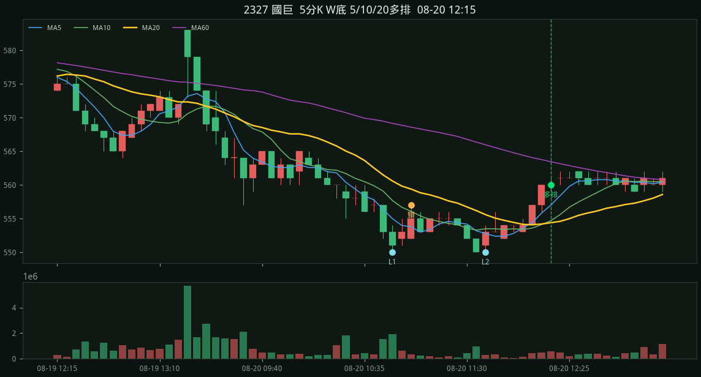
收盤 109.50 MA5 108.80 > MA10 108.20 > MA20 108.17 L1 108.00 / L2 107.50 / 頸線 110.50 停損 107.50 量度 113.50 彈回 1.86% 站上 1.22% 深度 2.79% 跌幅 6.51%
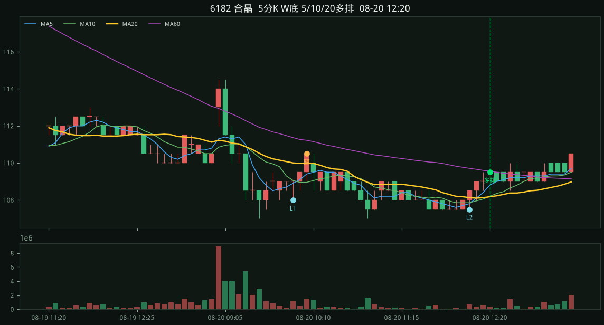
收盤 57.80 MA5 57.64 > MA10 57.46 > MA20 57.41 L1 57.00 / L2 57.00 / 頸線 57.70 停損 57.00 量度 58.40 彈回 1.40% 站上 0.69% 深度 1.23% 跌幅 7.54%
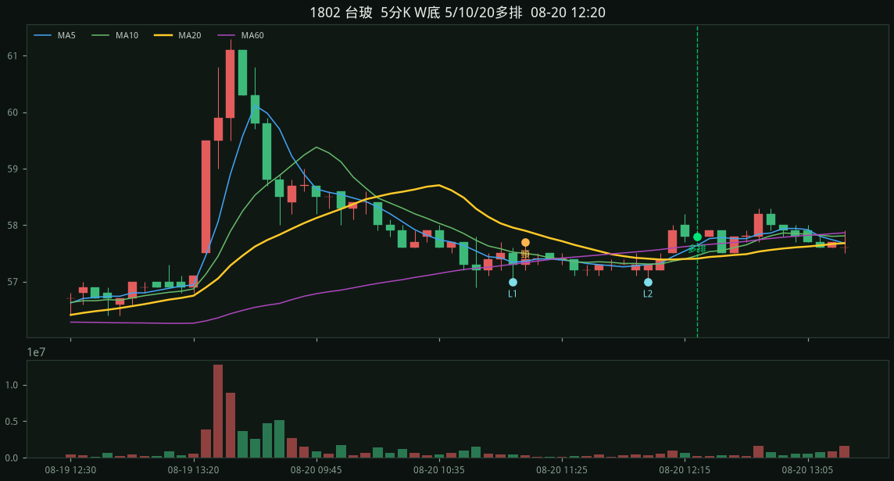
收盤 17.00 MA5 16.82 > MA10 16.74 > MA20 16.73 L1 16.70 / L2 16.65 / 頸線 16.90 停損 16.65 量度 17.15 彈回 2.10% 站上 1.63% 深度 1.50% 跌幅 10.21%
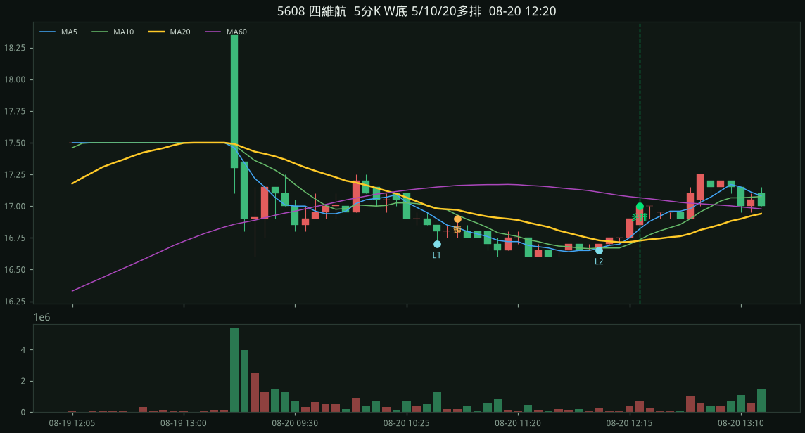
收盤 179.00 MA5 178.90 > MA10 177.90 > MA20 177.70 L1 177.00 / L2 176.00 / 頸線 179.00 停損 176.00 量度 182.00 彈回 1.70% 站上 0.73% 深度 1.70% 跌幅 7.39%
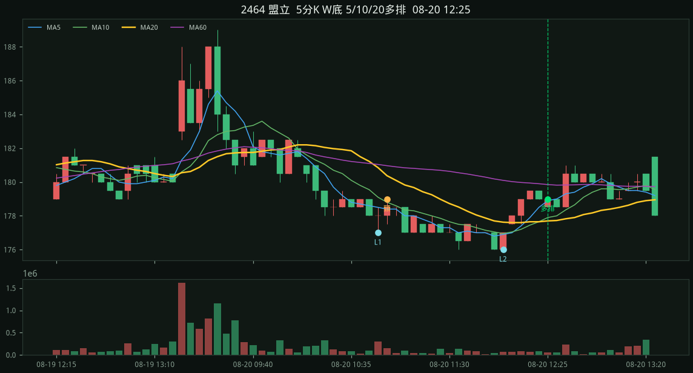
收盤 109.00 MA5 108.20 > MA10 108.15 > MA20 107.92 L1 107.50 / L2 107.50 / 頸線 109.00 停損 107.50 量度 110.50 彈回 1.40% 站上 1.00% 深度 1.40% 跌幅 11.16%
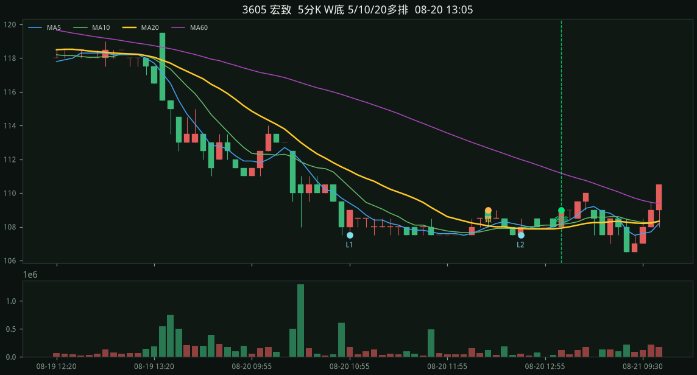
收盤 21.95 MA5 21.86 > MA10 21.84 > MA20 21.82 L1 21.60 / L2 21.55 / 頸線 22.15 停損 21.55 量度 22.75 彈回 1.86% 站上 0.57% 深度 2.78% 跌幅 7.66%
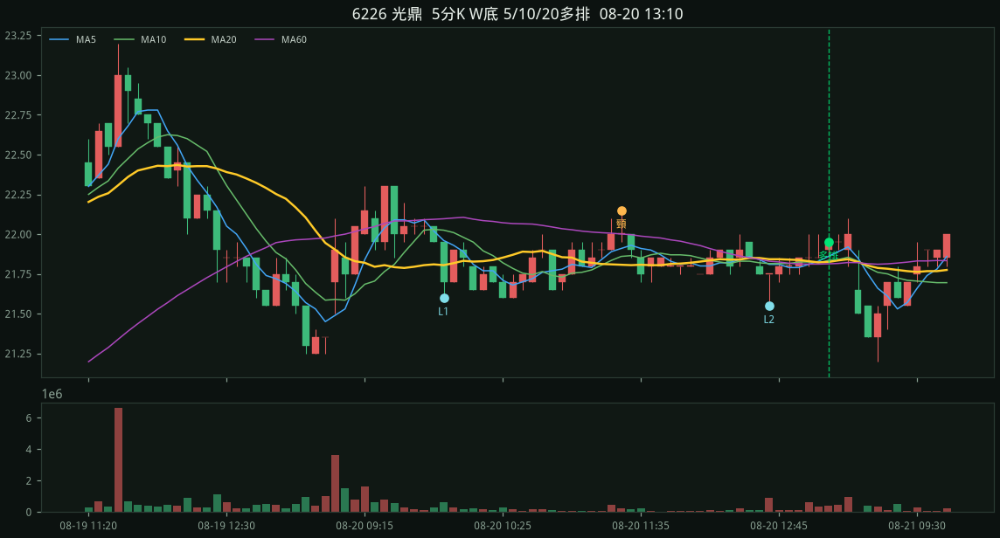
收盤 356.00 MA5 354.70 > MA10 354.60 > MA20 353.48 L1 352.00 / L2 352.50 / 頸線 359.00 停損 352.00 量度 366.00 彈回 1.14% 站上 0.71% 深度 1.99% 跌幅 7.95%
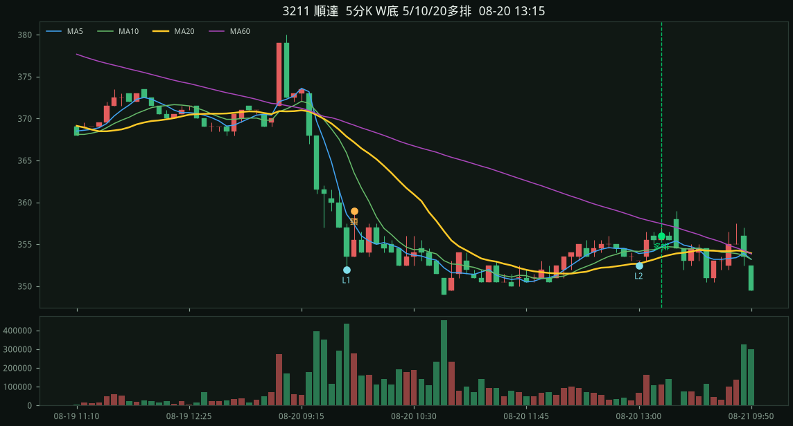
收盤 104.50 MA5 104.20 > MA10 104.00 > MA20 103.97 L1 103.00 / L2 103.00 / 頸線 104.50 停損 103.00 量度 106.00 彈回 1.46% 站上 0.50% 深度 1.46% 跌幅 6.31%
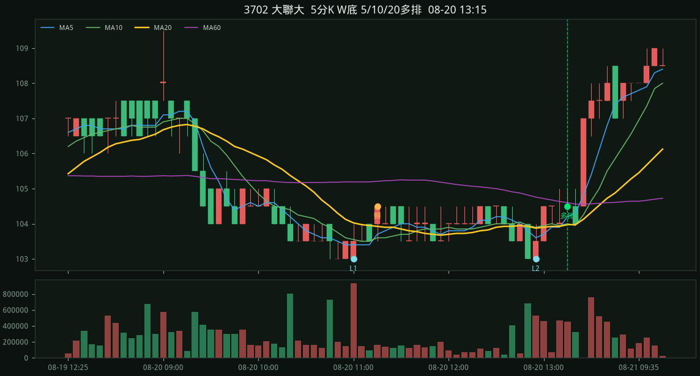
收盤 100.50 MA5 99.74 > MA10 99.73 > MA20 98.82 L1 97.30 / L2 98.20 / 頸線 102.50 停損 97.30 量度 107.70 彈回 3.29% 站上 1.71% 深度 5.34% 跌幅 5.86%
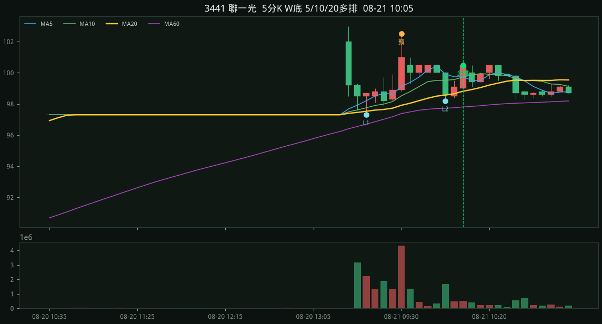
收盤 307.50 MA5 305.50 > MA10 304.70 > MA20 304.48 L1 298.50 / L2 302.00 / 頸線 310.50 停損 298.50 量度 322.50 彈回 3.02% 站上 0.99% 深度 4.02% 跌幅 5.86%
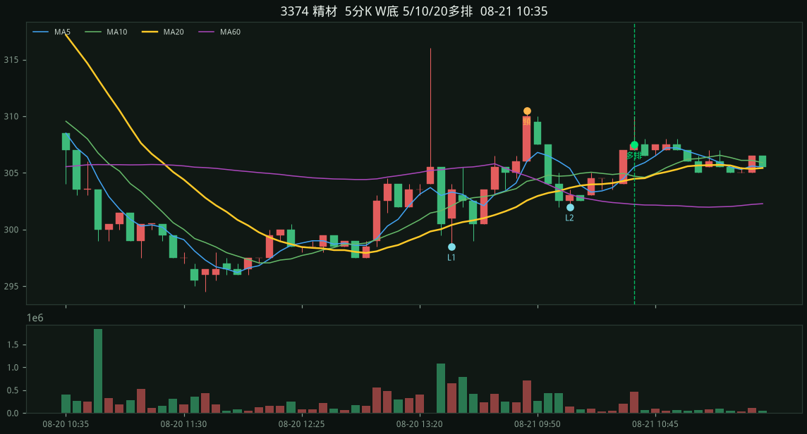
收盤 444.00 MA5 443.40 > MA10 441.65 > MA20 440.85 L1 437.00 / L2 431.50 / 頸線 447.50 停損 431.50 量度 463.50 彈回 2.90% 站上 0.71% 深度 3.71% 跌幅 7.30%
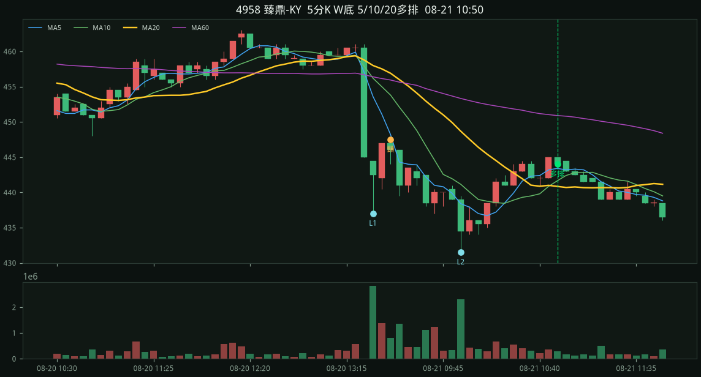
收盤 186.50 MA5 183.30 > MA10 182.50 > MA20 182.12 L1 181.00 / L2 181.00 / 頸線 186.00 停損 181.00 量度 191.00 彈回 3.04% 站上 2.40% 深度 2.76% 跌幅 5.52%
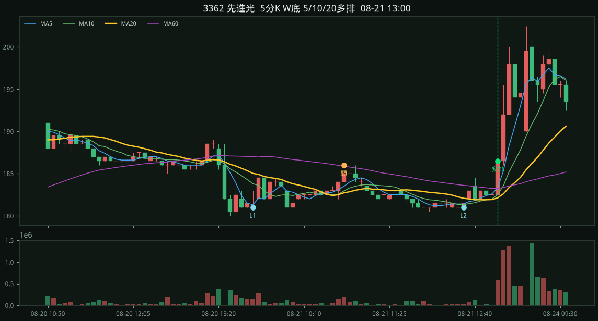
收盤 56.90 MA5 56.86 > MA10 56.69 > MA20 56.63 L1 56.20 / L2 56.00 / 頸線 57.00 停損 56.00 量度 58.00 彈回 1.61% 站上 0.49% 深度 1.79% 跌幅 6.25%
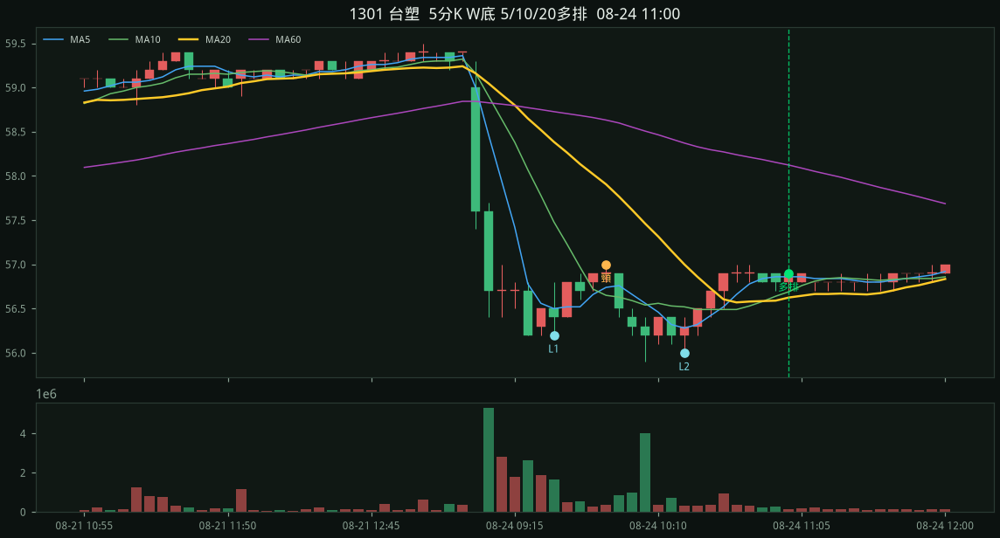
收盤 111.00 MA5 110.80 > MA10 110.40 > MA20 110.38 L1 109.00 / L2 109.00 / 頸線 112.50 停損 109.00 量度 116.00 彈回 1.83% 站上 0.57% 深度 3.21% 跌幅 7.34%
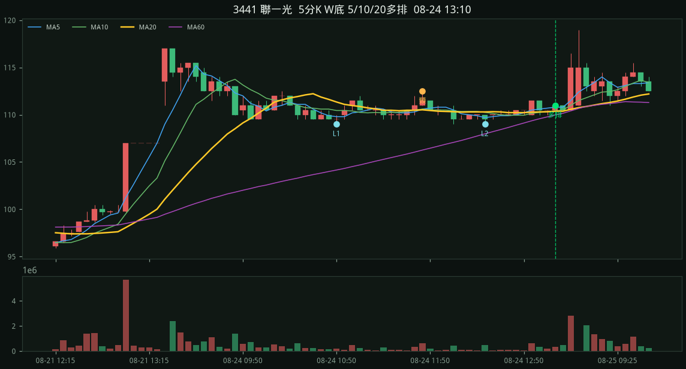
收盤 294.50 MA5 293.50 > MA10 292.80 > MA20 292.60 L1 290.00 / L2 290.00 / 頸線 294.50 停損 290.00 量度 299.00 彈回 1.55% 站上 0.65% 深度 1.55% 跌幅 6.21%
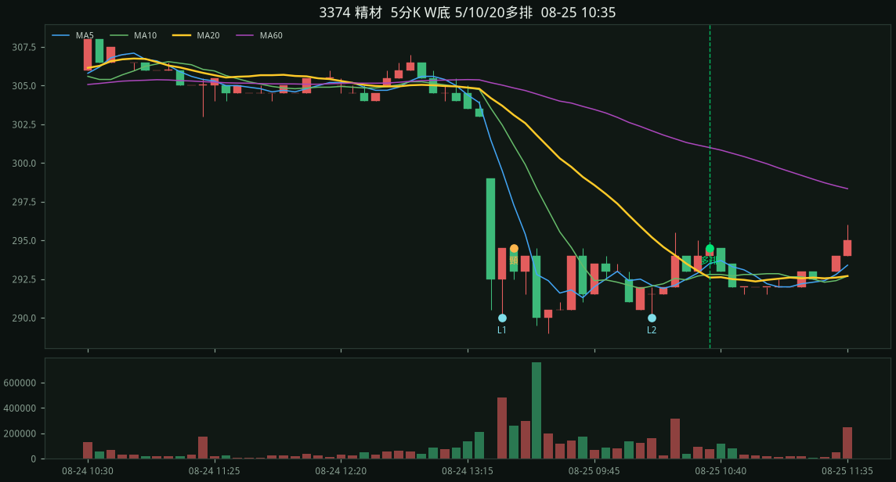
收盤 394.00 MA5 392.40 > MA10 391.55 > MA20 391.32 L1 385.00 / L2 388.50 / 頸線 397.00 停損 385.00 量度 409.00 彈回 2.34% 站上 0.68% 深度 3.12% 跌幅 6.75%
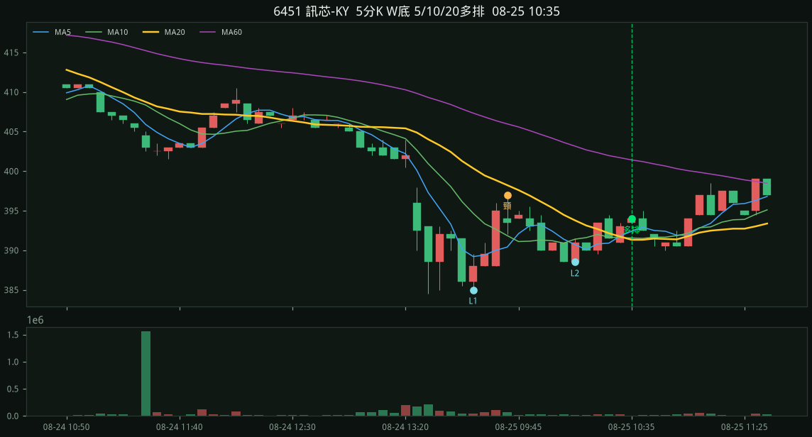
收盤 155.50 MA5 154.60 > MA10 153.70 > MA20 153.55 L1 152.50 / L2 152.50 / 頸線 156.00 停損 152.50 量度 159.50 彈回 1.97% 站上 1.27% 深度 2.30% 跌幅 5.90%

收盤 495.50 MA5 494.40 > MA10 493.70 > MA20 493.05 L1 485.50 / L2 486.50 / 頸線 500.00 停損 485.50 量度 514.50 彈回 2.06% 站上 0.50% 深度 2.99% 跌幅 9.99%
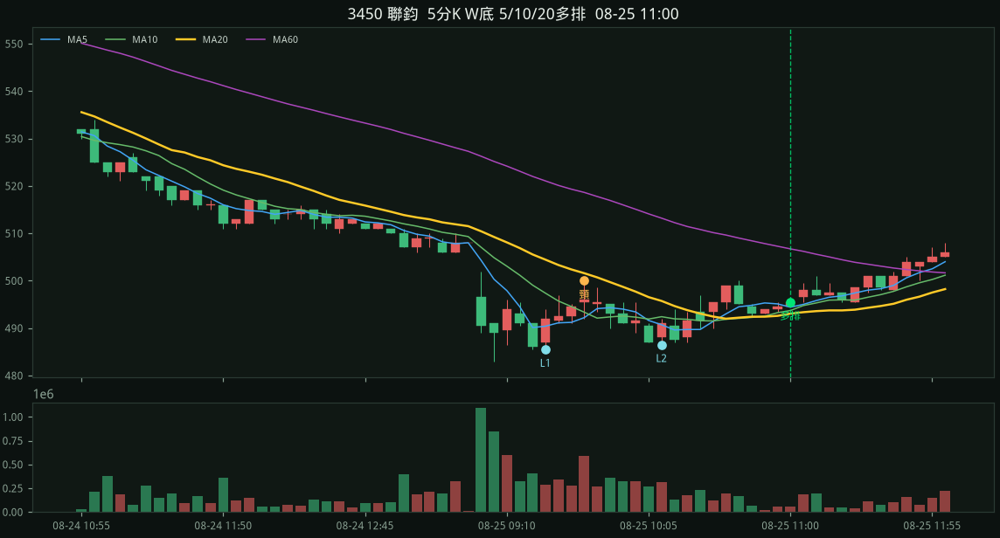
收盤 394.50 MA5 393.40 > MA10 392.95 > MA20 392.48 L1 388.50 / L2 390.00 / 頸線 395.00 停損 388.50 量度 401.50 彈回 1.54% 站上 0.52% 深度 1.67% 跌幅 5.66%

收盤 106.00 MA5 104.80 > MA10 104.50 > MA20 104.38 L1 103.00 / L2 103.50 / 頸線 105.50 停損 103.00 量度 108.00 彈回 2.91% 站上 1.56% 深度 2.43% 跌幅 6.31%
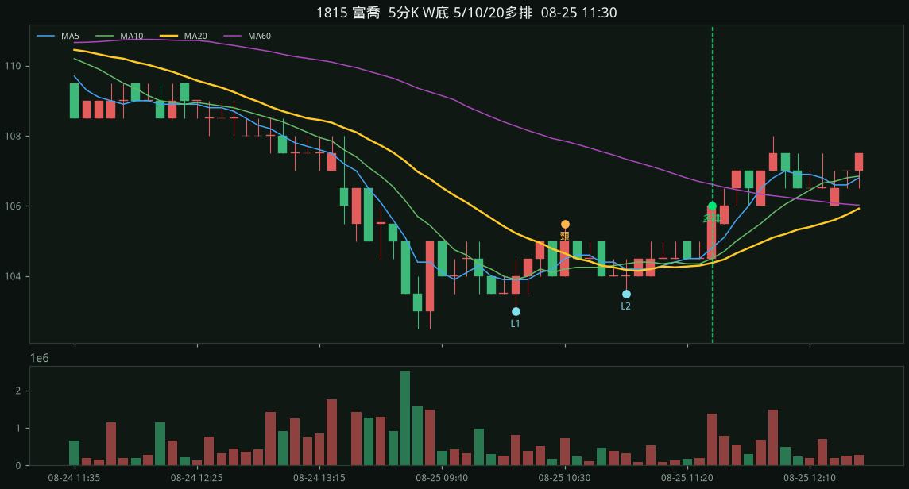
收盤 429.00 MA5 426.30 > MA10 425.95 > MA20 425.70 L1 423.00 / L2 424.50 / 頸線 430.00 停損 423.00 量度 437.00 彈回 1.42% 站上 0.78% 深度 1.65% 跌幅 7.68%
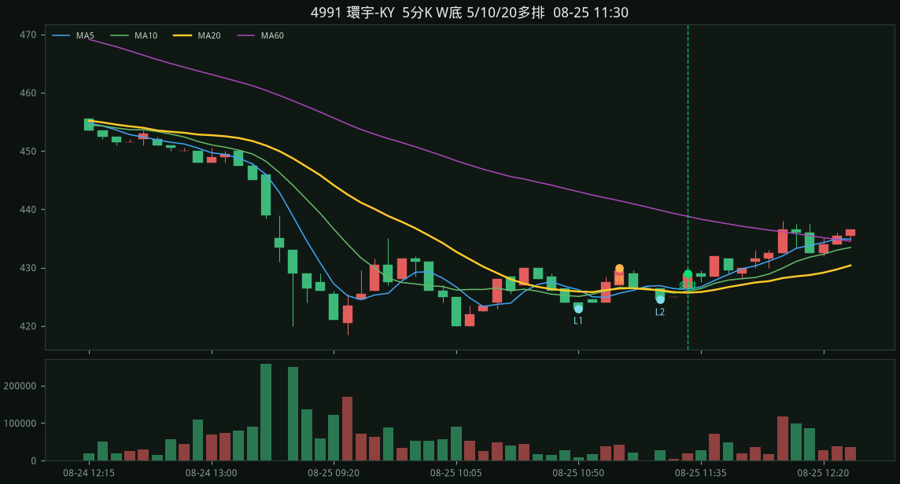
收盤 228.00 MA5 226.70 > MA10 225.75 > MA20 225.70 L1 224.00 / L2 224.00 / 頸線 227.00 停損 224.00 量度 230.00 彈回 1.79% 站上 1.02% 深度 1.34% 跌幅 6.70%
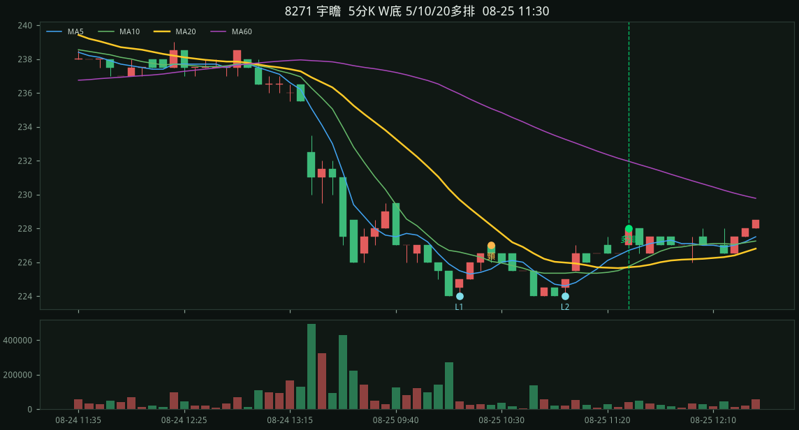
收盤 296.00 MA5 294.00 > MA10 293.10 > MA20 292.95 L1 290.00 / L2 292.00 / 頸線 295.50 停損 290.00 量度 301.00 彈回 2.07% 站上 1.04% 深度 1.90% 跌幅 6.21%

收盤 198.00 MA5 195.20 > MA10 194.75 > MA20 194.22 L1 193.00 / L2 193.00 / 頸線 195.50 停損 193.00 量度 198.00 彈回 2.59% 站上 1.94% 深度 1.30% 跌幅 9.07%
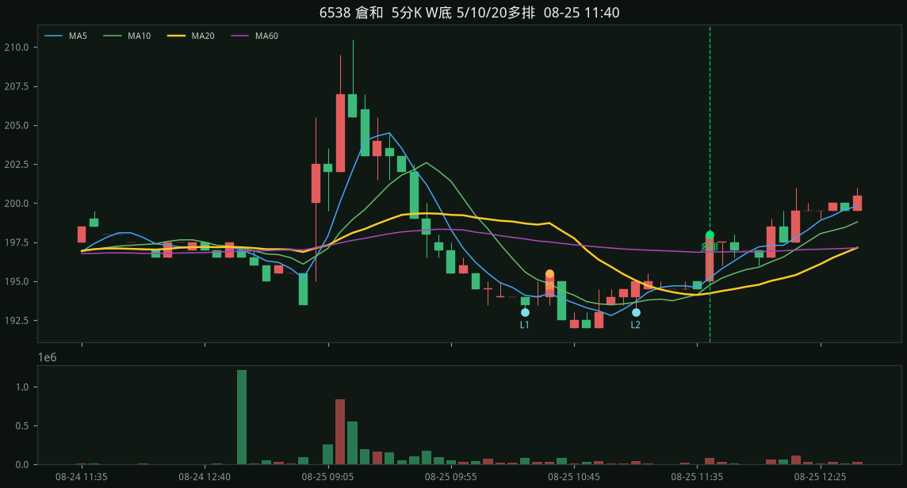
收盤 171.50 MA5 171.10 > MA10 170.50 > MA20 170.47 L1 170.00 / L2 169.50 / 頸線 172.50 停損 169.50 量度 175.50 彈回 1.18% 站上 0.60% 深度 1.77% 跌幅 6.49%
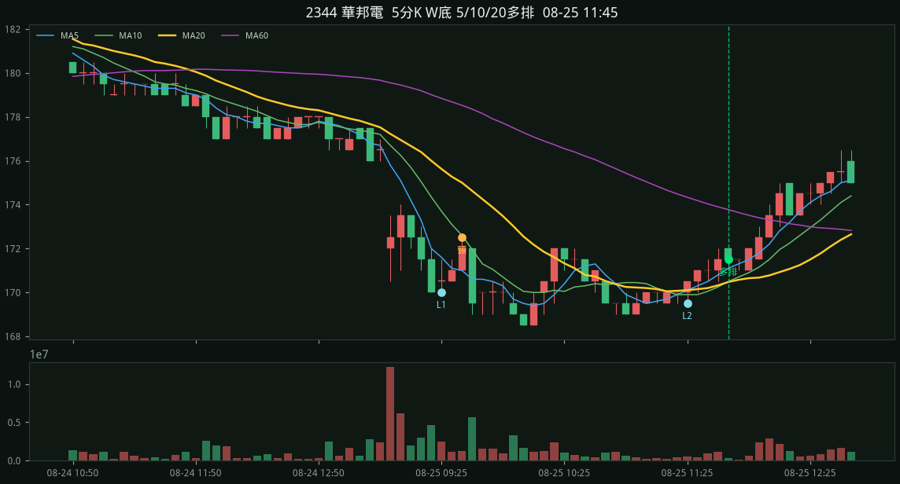
收盤 106.50 MA5 106.00 > MA10 105.50 > MA20 105.40 L1 104.50 / L2 104.50 / 頸線 106.00 停損 104.50 量度 107.50 彈回 1.91% 站上 1.04% 深度 1.44% 跌幅 7.66%

收盤 255.50 MA5 255.00 > MA10 253.95 > MA20 253.93 L1 252.00 / L2 251.00 / 頸線 256.00 停損 251.00 量度 261.00 彈回 1.79% 站上 0.62% 深度 1.99% 跌幅 7.57%
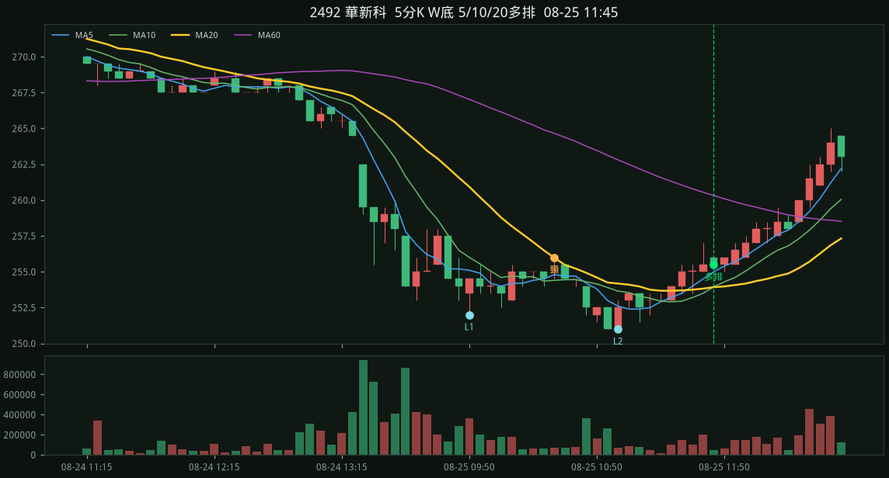
收盤 195.50 MA5 195.20 > MA10 193.85 > MA20 193.70 L1 191.00 / L2 190.50 / 頸線 195.50 停損 190.50 量度 200.50 彈回 2.62% 站上 0.93% 深度 2.62% 跌幅 9.71%
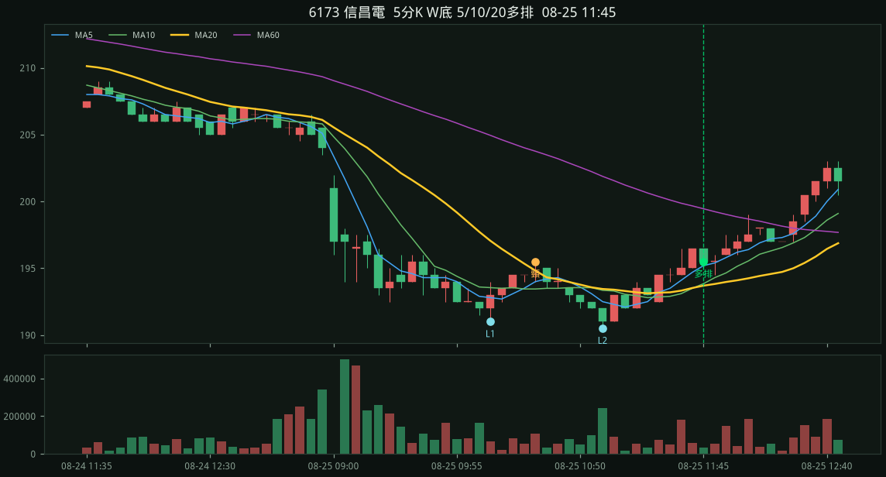
收盤 523.00 MA5 522.60 > MA10 520.20 > MA20 519.40 L1 515.00 / L2 515.00 / 頸線 523.00 停損 515.00 量度 531.00 彈回 1.55% 站上 0.69% 深度 1.55% 跌幅 9.51%

收盤 602.00 MA5 601.40 > MA10 598.40 > MA20 598.25 L1 590.00 / L2 592.00 / 頸線 599.00 停損 590.00 量度 608.00 彈回 2.03% 站上 0.63% 深度 1.53% 跌幅 12.37%
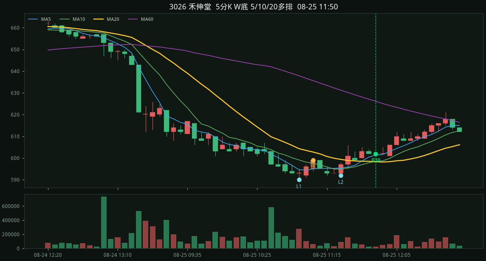
收盤 488.50 MA5 486.90 > MA10 485.40 > MA20 485.15 L1 480.00 / L2 482.00 / 頸線 491.00 停損 480.00 量度 502.00 彈回 1.77% 站上 0.69% 深度 2.29% 跌幅 7.92%
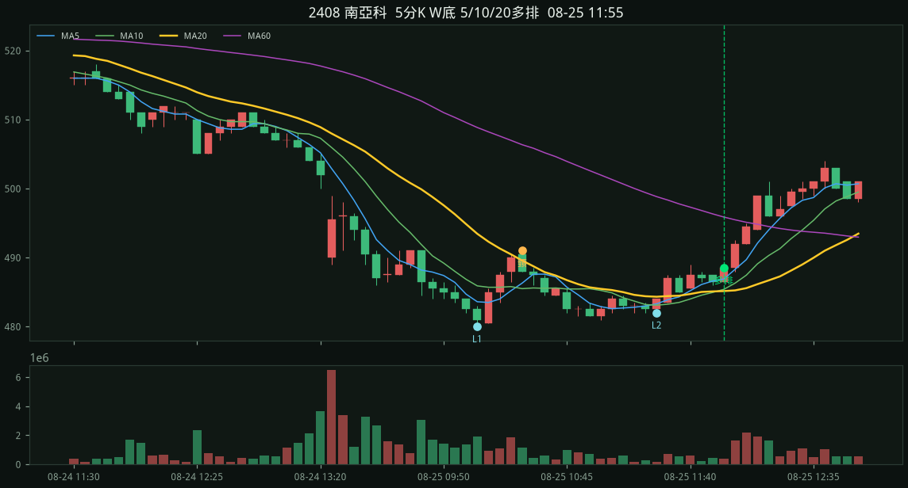
收盤 265.50 MA5 265.00 > MA10 263.50 > MA20 263.15 L1 260.00 / L2 260.00 / 頸線 267.50 停損 260.00 量度 275.00 彈回 2.12% 站上 0.89% 深度 2.88% 跌幅 8.46%
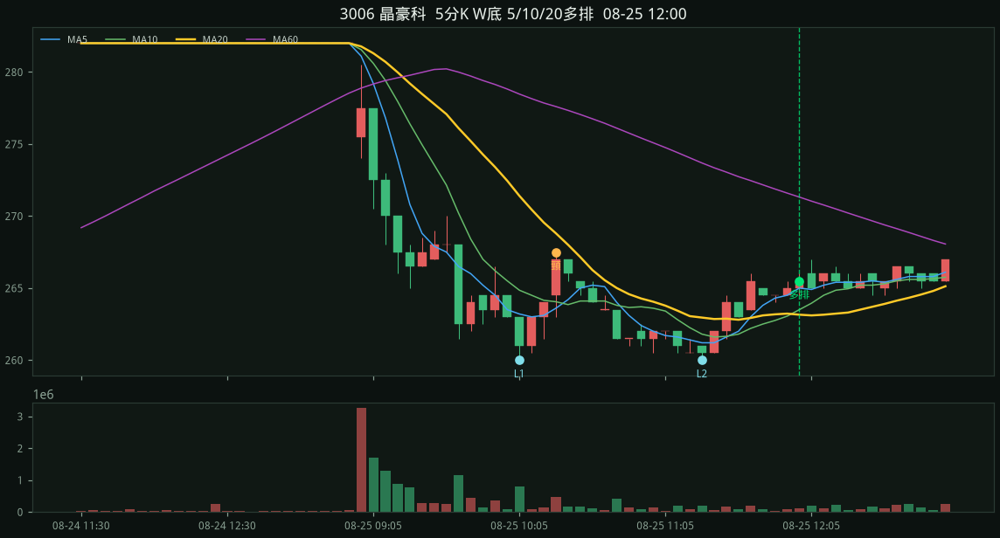
收盤 119.50 MA5 118.80 > MA10 118.70 > MA20 118.60 L1 117.50 / L2 118.00 / 頸線 119.50 停損 117.50 量度 121.50 彈回 1.70% 站上 0.76% 深度 1.70% 跌幅 6.81%
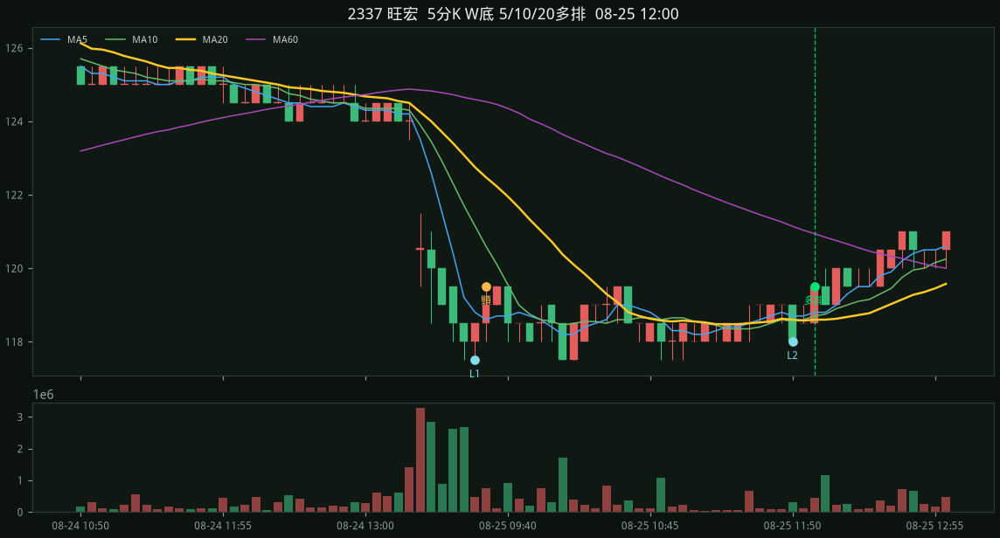
收盤 652.00 MA5 650.40 > MA10 648.20 > MA20 647.75 L1 647.00 / L2 638.00 / 頸線 672.00 停損 638.00 量度 706.00 彈回 2.19% 站上 0.66% 深度 5.33% 跌幅 10.97%
收盤 18.50 MA5 18.44 > MA10 18.36 > MA20 18.36 L1 18.20 / L2 18.15 / 頸線 18.40 停損 18.15 量度 18.65 彈回 1.93% 站上 0.76% 深度 1.38% 跌幅 7.16%

收盤 96.50 MA5 96.14 > MA10 95.84 > MA20 95.72 L1 95.40 / L2 95.40 / 頸線 97.10 停損 95.40 量度 98.80 彈回 1.15% 站上 0.81% 深度 1.78% 跌幅 10.06%
收盤 299.00 MA5 298.60 > MA10 298.55 > MA20 297.35 L1 295.00 / L2 296.50 / 頸線 300.00 停損 295.00 量度 305.00 彈回 1.36% 站上 0.55% 深度 1.69% 跌幅 8.31%